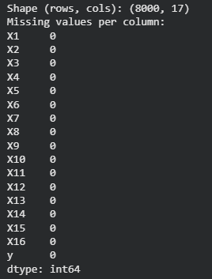
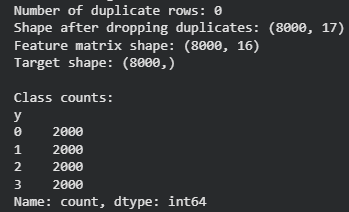
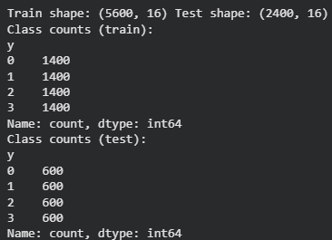
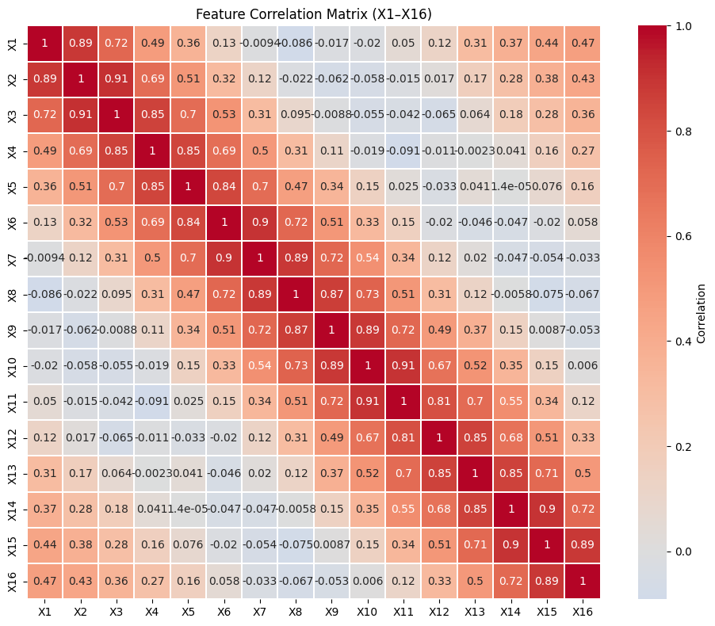
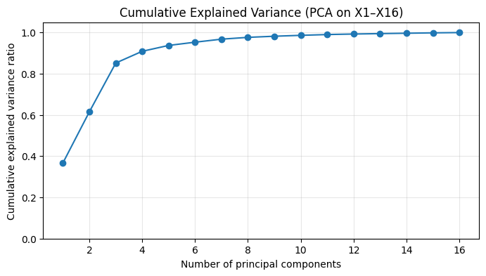
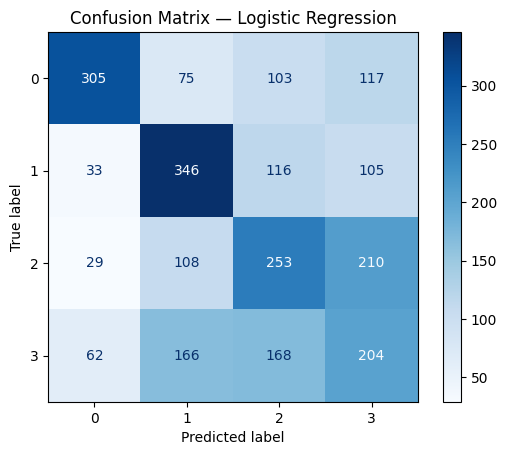
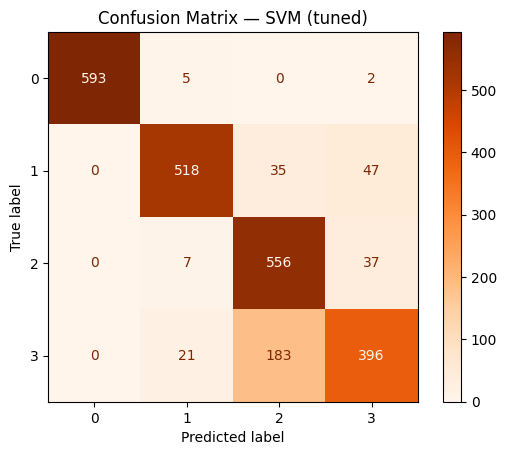
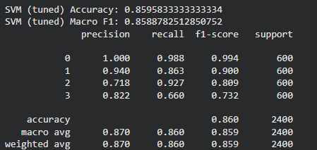
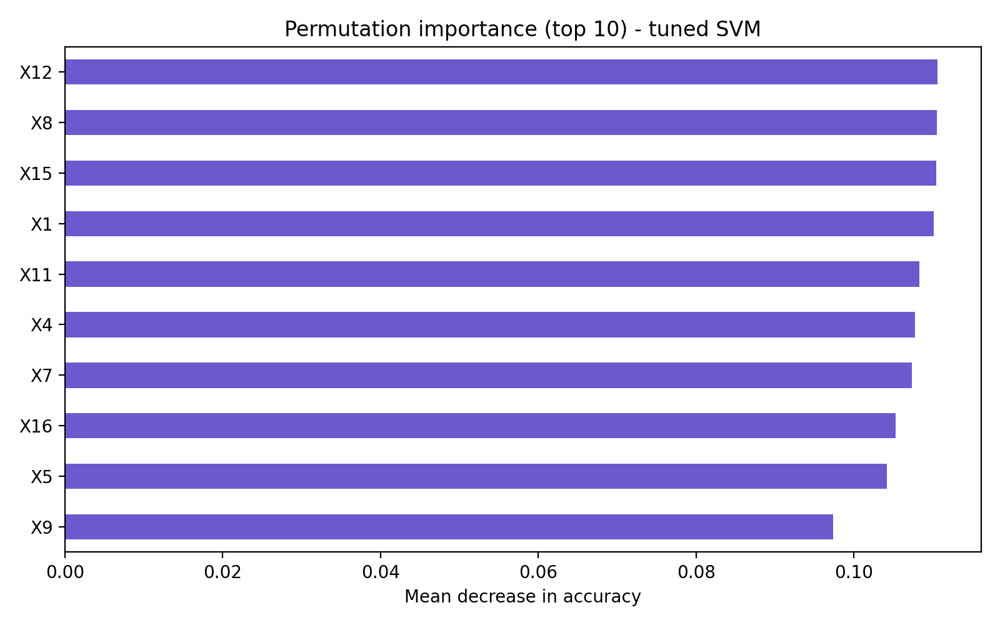

Overview
This project applies a supervised learning workflow to the Bangalore EEG Epilepsy Dataset, starting with a linear baseline and then testing whether a tuned non-linear model performs better on the same four-class task. The structure is simple on purpose: data checks, stratified split, baseline, stronger model, then evaluation.
The comparison is easy to follow. Logistic Regression reached 0.462 accuracy and 0.466 macro F1. A tuned RBF SVM pushed that to 0.860 accuracy and 0.859 macro F1 on the held-out test set.
Dataset and Preparation
- The local `BEED_Data.csv` file contains 8,000 observations and 17 columns.
- Sixteen predictors (`X1` to `X16`) represent EEG-derived features and `y` stores four class labels.
- The dataset is perfectly balanced with 2,000 observations in each class.
- Quality checks found zero missing values and zero duplicate rows.
- A stratified 70/30 train-test split preserved class balance across both partitions.
- Standardisation was fitted on the training set only and then applied to the test set to avoid leakage.
Exploration and Modelling
- EDA examined class distribution, selected feature distributions, feature correlations, and PCA explained variance.
- The correlation heatmap shows strong positive relationships across several feature groups, so the feature set is not simple or independent.
- PCA was used for interpretation only; the models were trained on the original standardised features.
- Logistic Regression was used first as an interpretable linear baseline.
- An RBF-kernel SVM was then trained as a non-linear comparison model and improved further with GridSearchCV.
- The tuned SVM used `C = 10` and `gamma = 0.1`, with mean cross-validated accuracy of `0.841` on the training folds.
Evaluation
- Logistic Regression reached `0.462` accuracy and `0.466` macro F1 on the test set.
- The untuned SVM improved this to `0.743` accuracy and `0.729` macro F1.
- The tuned SVM reached `0.860` accuracy and `0.859` macro F1 on the held-out test set.
- The tuned confusion matrix shows very strong performance for classes `0`, `1`, and `2`, while class `3` remains the hardest to separate.
- A supplementary permutation-importance view highlighted `X12`, `X8`, `X15`, `X1`, and `X11` among the most influential features for the final model.
Operational Relevance
- The main decision here is model selection: the linear baseline underperformed, so the tuned non-linear model became the better fit for this classification task.
- The project also shows a process decision that matters in healthcare analytics: keep limitations visible, because a strong score on one dataset still needs further validation before wider use.
- For a healthcare-facing analytics role, the useful signal is the discipline of the workflow: quality checks, controlled split, baseline comparison, tuned model, and explicit caution around generalisation.
Scope and Notes
The page shows the full path from data checks to final evaluation. You can see the split, the baseline, the tuned model, and the error pattern, which gives the final score more weight than a single number on its own.
This is an in-dataset classification study with a clear limitation around subject-wise validation, so the page keeps that boundary visible.








